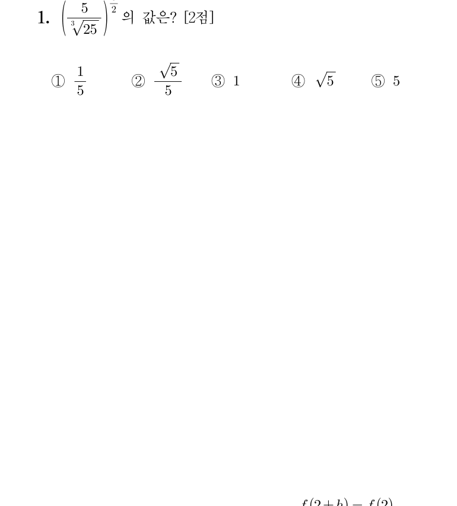

점수 0 / 0
0%
📘 수학I 1번 — 기초→심화 퀴즈
2024학년도 6월 고3 모의평가. 처음부터 차근차근, 모든 문항은 5지 선다·독립 문항입니다.
정답을 고르면 바로 채점되고, 왜 그 답인지 해설이 열려요.
📌 원본 문제 (오늘의 목표)

💡 아래 0단계 기초 개념부터 차근차근 해결해 나가면 원본 문제를 완벽하게 풀 수 있습니다!
🔰 제0단계 · 쓰이는 수학 기호 · 먼저 알아야 할 지식
달러기호 `$`로 감싼 것은 수식입니다 (예:
$x^2$ → x²).≤ — 작거나 같다(이하) · ≥ — 크거나 같다(이상)
$P(A)$ — 사건 A의 확률 = (일어난 경우)/(전체 경우)
$E(X)$ — 확률변수 X의 기댓값(평균)
$\int$ — 적분(넓이·누적) · $\sum$ — 합
$i$ — 허수단위($i^2=-1$) · $\log$ — 로그 · $f'(x)$ — 도함수
📖 이 문제를 풀기 위해 차례대로 알아야 할 지식 (요약)
L1: [지식] 거듭제곱이란? $\displaystyle a^n$ 은 $\displaystyle a$ 를 $\displaystyle n$ 번 곱한 것입니다. $\displaystyle a$ 를 '밑', $\displaystyle n$ 을 '지수'라 부릅니다. 예: $\displaystyle 3^2=3 \times 3=9$.L2: [지식] 분수의 거듭제곱 $\displaystyle \left(\frac{a}{b}\right)^n = \frac{a^n}{b^n}$ 입니다. 분자와 분모를 각각 $\displaystyle n$ 제곱합니다.
L3: [지식] 음의 지수 $\displaystyle a^{-1}=\frac{1}{a}$ 입니다. 지수가 -1이면 그 수의 '역수'가 됩니다. 분수의 역수는 분자와 분모를 뒤집습니다. 예를 들어 $\displaystyle \frac{2}{3}$ 의 역수는 $\displaystyle \frac{3}{2}$ 입니다.
L4: [지식] 분수 밑의 음의 지수 법칙 $\displaystyle \left(\frac{b}{c}\right)^{-n}=\left(\frac{c}{b}\right)^n$ 입니다. 밑을 뒤집고 지수의 부호를 반전시킵니다.
L5: [지식] 위 법칙을 계속 씁니다. $\displaystyle \left(\frac{2}{3}\right)^{-3}=\left(\frac{3}{2}\right)^3$ 입니다.
L6: [지식] 분수의 거듭제곱. $\displaystyle \left(\frac{3}{2}\right)^2 = \frac{3^2}{2^2} = \frac{9}{4}$ 입니다.
L7: [지식] 나눗셈을 곱셈으로 바꾸기. $\displaystyle \frac{A}{W} \div \frac{C}{D} = \frac{A}{W} \times \frac{D}{C}$ 입니다. 뒤의 분수를 뒤집어 곱합니다.
L8: [지식] 분수 곱셈과 약분. $\displaystyle \frac{27}{8} \times \frac{4}{9} = \frac{27 \times 4}{8 \times 9} = \frac{108}{72} = \frac{3}{2}$ 입니다. 분자와 분모를 같은 수로 나누어 약분합니다.
L9: [지식] 종합. 음의 지수 법칙과 나눗셈을 모두 사용합니다. $\displaystyle \left(\frac{2}{3}\right)^{-3} \div \left(\frac{3}{2}\right)^2 = \left(\frac{3}{2}\right)^3 \div \left(\frac{3}{2}\right)^2 = \left(\frac{3}{2}\right)^1 = \frac32$.
🟢 단계별 학습
먼저 알아야 할 지식
각 단계마다 필요한 수학적 지식을 먼저 제시합니다. 아래 단계를 차례대로 풀어보세요.문항
📖 먼저 알아야 할 지식
[지식] 거듭제곱이란? $\displaystyle a^n$ 은 $\displaystyle a$ 를 $\displaystyle n$ 번 곱한 것입니다. $\displaystyle a$ 를 '밑', $\displaystyle n$ 을 '지수'라 부릅니다. 예: $\displaystyle 3^2=3 \times 3=9$.$\displaystyle 3^2$ 의 값은?
1 ① 5
2 ② 6
3 ③ 9
4 ④ 12
5 ⑤ 15
문항
📖 먼저 알아야 할 지식
[지식] 분수의 거듭제곱 $\displaystyle \left(\frac{a}{b}\right)^n = \frac{a^n}{b^n}$ 입니다. 분자와 분모를 각각 $\displaystyle n$ 제곱합니다.$\displaystyle \left(\frac{2}{3}\right)^2$ 의 값은?
1 ① $\displaystyle \frac{2}{3}$
2 ② $\displaystyle \frac{4}{9}$
3 ③ $\displaystyle \frac{4}{3}$
4 ④ $\displaystyle \frac{8}{3}$
5 ⑤ $\displaystyle \frac{9}{4}$
문항
📖 먼저 알아야 할 지식
[지식] 음의 지수 $\displaystyle a^{-1}=\frac{1}{a}$ 입니다. 지수가 -1이면 그 수의 '역수'가 됩니다. 분수의 역수는 분자와 분모를 뒤집습니다. 예를 들어 $\displaystyle \frac{2}{3}$ 의 역수는 $\displaystyle \frac{3}{2}$ 입니다.$\displaystyle \left(\frac{2}{3}\right)^{-1}$ 의 값은?
1 ① $\displaystyle \frac{2}{3}$
2 ② $\displaystyle \frac{3}{2}$
3 ③ $\displaystyle \frac{4}{9}$
4 ④ $\displaystyle \frac{9}{4}$
5 ⑤ $\displaystyle \frac{1}{3}$
문항
📖 먼저 알아야 할 지식
[지식] 분수 밑의 음의 지수 법칙 $\displaystyle \left(\frac{b}{c}\right)^{-n}=\left(\frac{c}{b}\right)^n$ 입니다. 밑을 뒤집고 지수의 부호를 반전시킵니다.$\displaystyle \left(\frac{2}{3}\right)^{-2}$ 의 값은?
1 ① $\displaystyle \frac{4}{9}$
2 ② $\displaystyle \frac{9}{4}$
3 ③ $\displaystyle \frac{2}{3}$
4 ④ $\displaystyle \frac{3}{2}$
5 ⑤ $\displaystyle \frac{8}{27}$
문항
📖 먼저 알아야 할 지식
[지식] 위 법칙을 계속 씁니다. $\displaystyle \left(\frac{2}{3}\right)^{-3}=\left(\frac{3}{2}\right)^3$ 입니다.$\displaystyle \left(\frac{2}{3}\right)^{-3}$ 의 값은?
1 ① $\displaystyle \frac{8}{27}$
2 ② $\displaystyle \frac{27}{8}$
3 ③ $\displaystyle \frac{9}{4}$
4 ④ $\displaystyle \frac{3}{2}$
5 ⑤ $\displaystyle \frac{6}{9}$
문항
📖 먼저 알아야 할 지식
[지식] 분수의 거듭제곱. $\displaystyle \left(\frac{3}{2}\right)^2 = \frac{3^2}{2^2} = \frac{9}{4}$ 입니다.$\displaystyle \left(\frac{3}{2}\right)^2$ 의 값은?
1 ① $\displaystyle \frac{3}{2}$
2 ② $\displaystyle \frac{9}{4}$
3 ③ $\displaystyle \frac{6}{4}$
4 ④ $\displaystyle \frac{3}{4}$
5 ⑤ $\displaystyle \frac{9}{2}$
문항
📖 먼저 알아야 할 지식
[지식] 나눗셈을 곱셈으로 바꾸기. $\displaystyle \frac{A}{W} \div \frac{C}{D} = \frac{A}{W} \times \frac{D}{C}$ 입니다. 뒤의 분수를 뒤집어 곱합니다.$\displaystyle \frac{27}{8} \div \frac{9}{4}$ 를 곱셈으로 바꾸면?
1 ① $\displaystyle \frac{27}{8} \times \frac{9}{4}$
2 ② $\displaystyle \frac{27}{8} \times \frac{4}{9}$
3 ③ $\displaystyle \frac{8}{27} \times \frac{4}{9}$
4 ④ $\displaystyle \frac{27}{8} \div \frac{9}{4}$
5 ⑤ $\displaystyle \frac{8}{27} \times \frac{9}{4}$
문항
📖 먼저 알아야 할 지식
[지식] 분수 곱셈과 약분. $\displaystyle \frac{27}{8} \times \frac{4}{9} = \frac{27 \times 4}{8 \times 9} = \frac{108}{72} = \frac{3}{2}$ 입니다. 분자와 분모를 같은 수로 나누어 약분합니다.$\displaystyle \frac{27}{8} \times \frac{4}{9}$ 를 약분하여 간단히 하면?
1 ① $\displaystyle \frac{9}{4}$
2 ② $\displaystyle \frac{27}{8}$
3 ③ $\displaystyle \frac{3}{2}$
4 ④ $\displaystyle \frac{4}{3}$
5 ⑤ $\displaystyle \frac{1}{2}$
문항
📖 먼저 알아야 할 지식
[지식] 종합. 음의 지수 법칙과 나눗셈을 모두 사용합니다. $\displaystyle \left(\frac{2}{3}\right)^{-3} \div \left(\frac{3}{2}\right)^2 = \left(\frac{3}{2}\right)^3 \div \left(\frac{3}{2}\right)^2 = \left(\frac{3}{2}\right)^1 = \frac32$.$\displaystyle \left(\frac{2}{3}\right)^{-3} \div \left(\frac{3}{2}\right)^2$ 의 값은?
1 ① $\displaystyle \frac{2}{3}$
2 ② $\displaystyle \frac{3}{4}$
3 ③ $\displaystyle 1$
4 ④ $\displaystyle \dfrac32$
5 ⑤ $\displaystyle \frac{27}{8}$
🎯 최종 문제 + 도식화 상세 풀이
원본 문항
$\displaystyle \left(\dfrac{2}{3}\right)^{-3}\div\left(\dfrac{3}{2}\right)^2$ 의 값을 구하시오.
상세 풀이
## 풀이 **지식**: 음의 지수 $\displaystyle a^{-n}=\dfrac{1}{a^n}$, 분수 밑 $\displaystyle \left(\dfrac{b}{c}\right)^{-n}=\left(\dfrac{c}{b}\right)^n$. 1. $\displaystyle \left(\frac23\right)^{-3}=\left(\frac32\right)^3=\dfrac{27}{8}$ (밑을 역수로, 지수 부호 반전) 2. $\displaystyle \left(\frac32\right)^2=\dfrac94$ 3. 나눗셈: $\displaystyle \dfrac{27}{8}\div\dfrac94=\dfrac{27}{8}\times\dfrac49=\dfrac{108}{72}=\dfrac32$ **정답 ④ $\displaystyle \dfrac32$**
 📚 min7014 수학자료실 공식 연계 심층 탐구
📚 min7014 수학자료실 공식 연계 심층 탐구
이 문제와 관련된 수학적 원리를 민은기 선생님의 수학자료실(min7014)의 시각적 GeoGebra 조작 및 정리 자료와 함께 더 깊이 탐구해보세요.
🎉 수고하셨어요, M님! 기초부터 심화까지 끝냈습니다.
정답 ④ $\displaystyle \dfrac32$